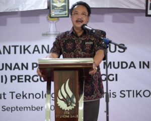
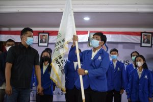
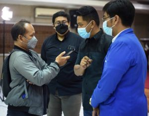

5 SEPTEMBER 2021
DENPASAR - Wakil Rektor III Bidang Kerja Sama dan Inovasi ITB STIKOM Bali I Made Sarjana menantang para mahasiswanya untuk menciptakan sebuah alat deteksi sebaran Covid - 19, sekaligus sebagai jalan untuk merintis sebuah bisnis di tengah pandemi Civid - 19. “Dalam situasi pandemi Civid - 19 ini cobalah Anda ciptakan sebuah alat yang bisa taruh di jam tangan atau di saku, saat kita berdekatan dengan orang terpapar Covid -19, alat itu langsung berbunyi sehingga kita bisa menghindarinya. Itu peluang bisnis besar,” tantang Sarjana ketika memberikan sambutan dalam pelantikan pengurus Himpunan Pengusaha Muda Indonesia (HIPMI) Kampus ITB STIKOM Bali di aula kampus tersebut, Sabtu (04/09/2021).
Sarjana memberi contoh sebuah alat yang dipasang di loby ITB STIKOM Bali. “Begitu kita letakan tangan, cairan sanitizer keluar dan muncul angka suhu tubuh. Nah coba kalian bikin alat lain untuk deteksi orang Covid-19,” kata Sarjana. Menurut Sarjana, di era teknologi informasi atau information technology (IT) dewasa ini telah melahirkan banyak orang kaya dan itu bukan hal yang luar biasa. “Sebagai mahasiswa IT kalau Anda menjadi kaya, bukan hal yang luar biasa. Tapi Kalau Anda hidup miskin. itulah yang luar biasa. Lihatlah orang kaya dewasa ini, kebanyakan pengusaha IT. Maka kalau Anda mahasiswa IT lalu hidup miskin, itulah yang luar biasa. Itu berarti Anda gagal mengembangkan diri,” tentang Sarjana. Mengenai pembentukan HIPMI di perguruan tinggi, kata Sarjana, itu sudah diwacanakan sejak lima tahun lalu, dan pada akhirnya baru terwujud sekarang. “Terbentuknya HIMPI ITB STIKOM Bali merupakan yang paling membanggakan di bulan ini,” ungkpanya.
Made Sarjana ini berharap, para pengurus HIPMI Kampus ITB STIKOM Bali dapat memanfaatkan momentum ini untuk memulai sebuah bisnis rintisan (startup). Dikatakan, gerakan 1.000 wirausahawan muda ITB STIKOM Bali yang dicanangkan sejak lima tahun lalu dan diresmikan oleh AA Puspayoga, Menteri Koperasi dan UMKM kala itu, akhirnya terjawab oleh Presiden RI Joko Widodo yang juga mencanangkan 10.000 startup. “Ini sejalan dengan program ITB STIKOM Bali. Terwujud harapan dan impian kita,” kata Made Sarjana yang juga sebagai pembina HIPMI Kampus ITB STIKOM Bali. Sarjana menjabarkan, 10 persen dari wisudawan ITB STIKOM Bali diresmikan menjadi wirausahawan muda. “Jadi setiap kali wisuda, kita tidak hanya melepas sarjana, tetapi juga melepas wirausaha muda ITB STIKOM Bali. Negeri kita ini butuh barisan pengusaha,” tandasnya. Menurut Made Sarjana, banyak orang hanya duduk diskusi dan merencanakan sebuah bisnis berjam-jam, berhari-hari tetapi tidak ada aksi. “No action, not happen,” tegasnya.
Sebelumnya, Ketua Himpunan Pengusaha Muda Indonesia (HIPMI) Kota Denpasar, Dewa Gede Ngurah Wirayuda saat melantik Pengurus HIPMI Perguruan Tinggi ITB STIKOM Bali, mengatakan HIPMI ITB STIKOM Bali adalah HIMPI kampus ke-11 dibentuk di Bali, terbanyak di Kota Denpasar. Disebutkan, HIMPI kampus ini digulirkan oleh Bahlil Lahadalia, Ketua Umum Badan Pengurus Pusat (BPP) HIPMI) periode 2015-2019, yang pada 28 April 2021 lalu dilantik oleh Presiden Jokowi menjadi Menteri Investasi. “ITB STIKOM Bali sangat kami idam-idamkan sejak dulu (untuk membentuk HIPMI kampus). Dan ini merupakan gagasan dari Ketua Umum kami sebelumnya, sejak tahun 2015. Beliau ingin HIPMI memiliki regenerasi terbaik sehingga tidak susah mencari ketua umum. Karena sudah diasa di perguruan tinggi,” ungkap Dewa Gede Ngurah Wirayuda. Dikatakan, masa jabatan HIPMI di perguruan tinggi hanya satu tahun. “Di Bali diharapkan ada HIPMI perguruan tinggi di kabupaten/kota. Namun karena tidak semua ada kampus, jadi Denpasar yang paling berkembang,” ujarnya. Kepada pengurus HIPMI ITB STIKOM Bali, Wirayuda meminta agar melakukan kolaborasi dan menggunakan networking yang dimiliki. “Dalam Denfest (Denpasar Festival-red) nanti, HIPMI akan disediakan tempat untuk memamerkan produknya,” ujarnya. Sementara itu, Ketua HIPMI ITB STIKOM Bali yang baru dilantik, Gede Hendri Mahardika Wicaksana mengatakan, sebagai organisasi maka langkah awal yang dia lakukan adalah membangun fondasi organisasi terlebih dahulu ini. “Tujuan organisasi kami yakni mensuport ITB STIKOM Bali dalam menciptakan seribu pengusaha muda. Namun tujuan itu untuk jangka panjang,” ujar mahasiswa dari Prodi Sistem Informasi ini seraya mengatakan, terbentuknya organisasi ini akan mengakselerasi tujuan 1000 pengusaha muda tersebut. Untuk saat ini, lanjut dia, fokus membangun relasi yang didahului dengan membangun pondasi. “Dalam membangun bisnis itu, fondasi yang paling penting,” ujar pemuda berusai 20 tahun yang sebelumnya dalam sambutanya melontarkan tagline motivasi 'Muda, Sukses, dan Kaya' . Kepala Inkubator Bisnis ITB STIKOM Bali Dedy Panji Agustino berharap, HIPMI ITB STIKOM Bali dapat menggairahkan bisnis yang ada di kampus ini. Jaringan dan ekosistem yang telah dimiliki semakin kuat, karena sudah ada organisasi yang kuat bagi mahasiswa. Baik yang sudah punya usaha, maupun yang mempunyai passion di bidang usaha. “Dengan demikian, target kita dalam mencetak wirausaha muda yang baru itu bisa tercapai,” harapnya. Dia menambahkan, di ITB STIKOM Bali sendiri telah ada beberapa pengusaha muda yang baru mulai merintis (startup) maupun yang sudah berjalan. “Tentunya dengan adanya organisasi ini, kita akan lakukan pengembangan-pengembangan,” tandasnya.